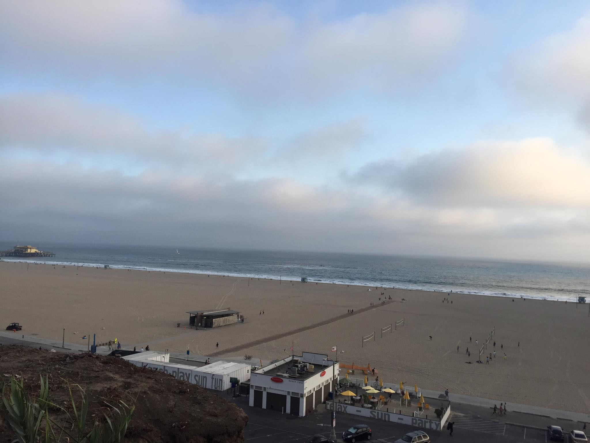

As you land in LAX, the first thing that greets you in the airport is the American flag. The amount of flags being flown around rivals the number of Starbucks round the corner. It will be a short weekend trip in the City of Angels before heading up to Northern California.

If you're visiting LA without a vehicle, metro would be your next best choice. Some form of skateboard would also work and you won't feel like the odd one out as most of the population go around on boards.
It would be easier to go around LA once you've broken them down into different blocks of neighbourhoods. Each area would gladly take half a day if you're keen on visiting all the architecture sites they have to offer. There are 3 major tourist areas to visit in LA: the Central LA,Downtown LA and the Westside.
Central LA is where you will find both Hollywood Boulevard and the Sunset Boulevard. As the pavements are nicely done with terrazzo (polished concrete with chips of either marble or granite) they make for a very smooth surface to skate on.
How can one justify having visited California without trying their county treasure - In-&-Out? This burger joint specialises in cheap fast food with the cheapest burger costing only $2 (£1.60). There is also a secret menu you should look out and could order from - the option ranging from animal style fries to 4x4. Give it a go next time and you'll find out yourself just why it has been so raved about.
Another attraction you can find in Central LA/Hollywood is the Universal Studios. If you're staying within Hollywood, head onto the metro and find the station - North Hollywood. NoHo is only a few stops away; after 15 minutes on the metro get on a shuttle picking tourist up from the station which should take you directly to the park. Here they have a section for Harry Potter, albeit not the best Harry Potter section out of all the other Universals, you can still go there for a photo of Hogwarts from afar. The butterbeer is a good beverage to have under the heat and dryness of the Californian sun.
Making my way downtown, walking fast, faces pass and I'm home-bound. Downtown LA is no doubt the CBD of the county. Here you will more office workers than any other part of LA. There are a few interesting sites to see in this part - concert halls, contemporary art museums and so much more to offer. For museum nuts head directly to the Broad. There you get to see the art gallery and take a look at Frank Gehry's Walt Disney Concert Hall. Continuing on the street from the structures, is the Cathedral of Our Lady of the Angels. This cathedral stood out from the European counterparts with its bronze door and masonry stone. Rafael Moneo nuts could also head that way for a pilgrimage. Further south downtown stands the Bradbury Building known for its skylit atrium work and clandestine cast-iron works.
Getting on a bus heading West takes you right by Santa Monica. There should be a thing to be aware of is when the peak times are as it could take you more than 2 hours to travel a little just over 10 miles in the bus during rush hour.Santa Monica pier remains a tourist go to for a beachside funtimes. Pavement by the beach also provides a relative smooth if not slightly rugged surface to skate on.
Wake me up in San Francisco. Home of the Ghirardelli chocolates, there's also a lot San Fran can offer that is different from your usual Hollywood glam. Visit the Ghirardelli headquarters see how their chocolate get made and even order some chocolate sundae from the cafe there. It is guarantee a good spot for a good dessert. After the chocolate head down to the Fisherman's Wharf and order a clam chowder from any vendors you can find. It is best served in a sourdough bowl and sourdough is also a San Fran local delicacy. Don't forget to stop before leaving San Fran completely at the spot where you can look back and take a photo of the Golden Bridge because are you even there if you haven't taken a photo of this engineering accomplishment?
Leaving California, head NE to the county of potatoes. Well known for their potatoes, Idaho also provide lots of scenic places for your adventurous adrenaline junkies. One small stop made for the 4th July weekend was the Elk River. This village usually holds around 100 people but over 1000 people come from around the counties for their fireworks on the weekend. As it is a small village, everybody go around in their quadbikes and side-by-sides. You could also pick up some souvenirs - huckleberries is quite prominent in this part of Idaho; they're slightly tartier than your blueberries but still have that sweet aftertaste.
Heading back West from Idaho is another city by the sea. Seattle is where the first Starbucks opened their shop, you could try queue for the original starbucks - the one where they have still kept their original black and white logo for the naked mermaid. One spot to visit is the Pike Place Market where you can participate and watch some fish-throwing action happening. If you're looking for spots for photographs, you can head towards the gum wall and leave a bit of yourself in Seattle.
The American trip lasted 3 weeks in which the cities were visited in the following order